Aggregation & Statistical Operations in NumPy
Raw numerical data se meaningful insights nikalne ka complete practical guide: Sum, Mean, Median, Variance, Standard Deviation, Percentiles, Axis Reductions, aur Robust Outlier Handling.
Table of Contents
01. Opening — Turn Raw Data into Useful Information
Imagine karo tumhare paas ek local retail shop (jaise grocery ya electronic store) ke 7 dino ki daily sales figures hain. Agar tum customer billings ka plain data dekho, toh wo bas ek numbers ki lambi list lagti hai:
import numpy as np # 7 days of daily sales (Monday to Sunday) in Rupees (₹) sales = np.array([1200, 1500, 1100, 1800, 2000, 1700, 2200]) print("Total sales:", np.sum(sales)) print("Average sales:", np.mean(sales)) print("Lowest sales:", np.min(sales)) print("Highest sales:", np.max(sales))
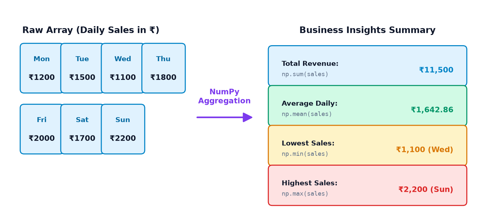
Ye chaar numbers business ke liye kya batate hain?
- Total Revenue (• np.sum): Poore week mein dukaan ne kul ₹11,500 ka turnover kiya. Isse weekly cashflow aur taxation manage hoti hai.
- Average Daily Sale (• np.mean): On average, har din dukan par lagbhag ₹1,642.86 ki sale hui. Is benchmark se aage aane wale weeks ko evaluate kiya ja sakta hai.
- Lowest Sales (• np.min): Wednesday ko sabse kam sale hui (₹1,100). Owner inspect kar sakta hai ki kya supply issue tha ya weekly market band tha.
- Highest Sales (• np.max): Sunday ko peak sale hui (₹2,200). Weekend rush aur customer demand ko handle karne ke liye staff planning ho sakti hai.
02. What is Aggregation? (Condensing Data)
Simple Hinglish mein samjhein toh: Aggregation ka matlab hota hai multiple values ko summarize karke ek single value ya chote structured result mein convert karna.
Topics 9 aur 10 mein humne Element-wise operations seekhe the, jahan agar array mein 5 elements hain toh output mein bhi 5 elements aate hain (jaise arr * 2). Lekin Aggregation mein array ke multiple elements collate hokar ek scalar value ya reduced dimension banate hain.
| Feature | Element-Wise Operations (Topic 9 & 10) | Aggregation Operations (Topic 11) |
|---|---|---|
| Input Array Size | Array of shape (N,) |
Array of shape (N,) ya (M, N) |
| Output Size | Same shape (N,) |
Single scalar value ya smaller shape (e.g. () ya (M,)) |
| Core Goal | Har individual element ko transform karna | Saare elements ka statistical summary nikalna |
| Classic Examples | arr + 10, np.sqrt(arr), np.sin(arr) |
np.sum(arr), np.mean(arr), np.std(arr) |
Example 1: Total Student Marks
Ek student ne chaar subjects mein marks score kiye hain. Aggregation se hume uska grand total milta hai:
import numpy as np marks = np.array([70, 80, 90, 60]) # Aggregation: 4 values condense into 1 total sum total = np.sum(marks) print("Total:", total)
Example 2: Average Temperature
5 dino ka ambient room temperature note kiya gaya hai. Average temperature ek single representative figure deta hai:
import numpy as np temperatures = np.array([28, 30, 31, 29, 32]) # Aggregation: 5 values condense into 1 arithmetic average avg_temp = np.mean(temperatures) print("Average:", avg_temp)
03. Basic Summary Functions: Finding Extrema, Sums, & Positions
NumPy hume fast C-level aggregation functions provide karta hai jo standard Python built-in functions (jaise sum(), min(), max()) ke muqable 50x se 100x fast execute hote hain.
np.sum(a): Array ke saare elements ka grand addition.np.prod(a): Array ke saare elements ka multiplication (product).np.min(a): Array ki minimum value.np.max(a): Array ki maximum value.np.argmin(a): Minimum value kis index position par baithi hai.np.argmax(a): Maximum value kis index position par baithi hai.np.count_nonzero(a): Array mein kitne elements non-zero (ya True) hain.
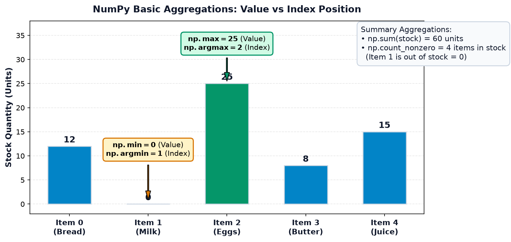
Example 1: Shop Inventory Stock Monitoring
Ek warehouse mein 5 items ka inventory stock monitor ho raha hai. Notice karo index 1 par stock 0 hai:
import numpy as np stock = np.array([12, 0, 25, 8, 15]) print("Total stock:", np.sum(stock)) print("Minimum stock:", np.min(stock)) print("Maximum stock:", np.max(stock)) print("Position of minimum:", np.argmin(stock)) print("Position of maximum:", np.argmax(stock)) print("Non-zero entries:", np.count_nonzero(stock))
Example 2: Small Numerical Dataset Multiplication & Sum
import numpy as np values = np.array([2, 3, 4, 5]) print("Product:", np.prod(values)) print("Sum:", np.sum(values))
Critical Concepts to Understand
-
Value vs Index:
np.max(stock)return karta hai25(asli quantity), jabkinp.argmax(stock)return karta hai2(item number index). - Zero-Based Indexing: NumPy indexing 0 se start hoti hai. Isliye 1st item index 0 par hai aur 2nd item index 1 par.
-
Tie-Breaking Rule (Multiple Min/Max elements): Agar array mein do ya do se zyada elements same maximum share karte hain (jaise
[10, 50, 30, 50, 20]), tohnp.argmax()humesha first occurrence ka index (index 1) return karta hai. -
Zero vs Missing: Inventory mein
0ek legitimate valid number hai jiska matlab hai "Out of Stock". Lekin data collection error ya missing value ko0nahi manna chahiye, uske liyenp.nanuse hota hai (Section 10).
np.argmax(arr) ko highest value samajhkar calculations mein multiply ya divide mat karna! Ye sirf ek address / index hai. Highest value lene ke liye np.max(arr) ya arr[np.argmax(arr)] use karein.
04. Measures of Central Tendency — Mean, Median, and Mode
Jab hamare paas hazaron numbers hote hain, toh sabse pehla sawaal hota hai: "In saare numbers ka typical center point kahan hai?" Isi ko statistics mein Central Tendency kehte hain.
- Mean (Arithmetic Average): Saare values ka sum divided by total number of values: $\mu = \frac{\sum x_i}{N}$. Ye distribution ka physical balance point hota hai.
- Median (Middle Value): Data ko ascending order mein sort karne ke baad exact beech ka number. Agar values even number mein hain, toh middle do numbers ka average.
- Mode (Most Frequent): Jo value data mein sabse zyada baar repeat hui ho.
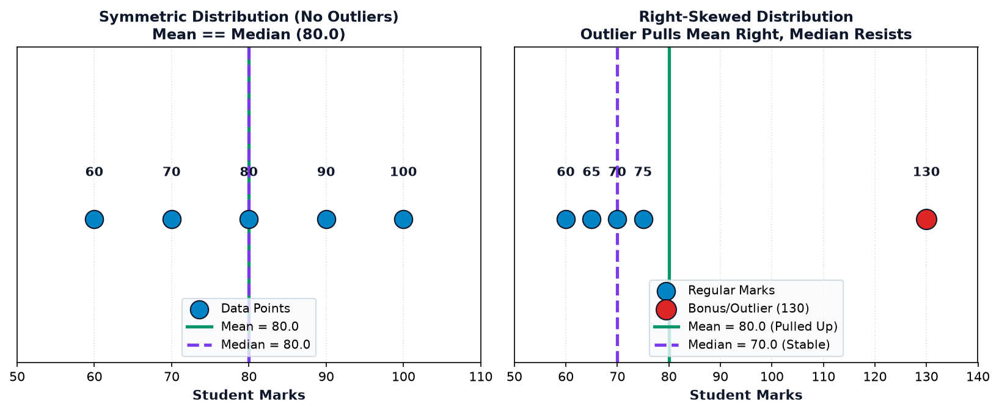
Example 1: Balanced Student Marks
import numpy as np marks = np.array([60, 70, 80, 90, 100]) print("Mean:", np.mean(marks)) print("Median:", np.median(marks))
Example 2: The Dangerous Effect of an Outlier (Salary Skew)
Socho ek startup mein 5 employees hain jinki monthly salaries lagbhag ek jaisi hain. Ab company ek executive hire karti hai jiska package ₹2,00,000 hai:
import numpy as np normal_salaries = np.array([20000, 22000, 24000, 26000, 28000]) salary_with_outlier = np.array([20000, 22000, 24000, 26000, 200000]) print("Normal mean:", np.mean(normal_salaries)) print("Mean with outlier:", np.mean(salary_with_outlier)) print("Median with outlier:", np.median(salary_with_outlier))
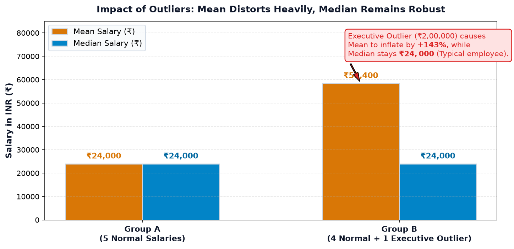
Mode NumPy mein kaise calculate karein?
NumPy ke standard namespace mein koi direct np.mode() function nahi hota. Iska pure NumPy tarika hai np.unique() ko return_counts=True ke saath use karna:
import numpy as np # Customer product ratings (1 to 5 stars) ratings = np.array([4, 5, 3, 4, 4, 5, 2, 4, 5]) values, counts = np.unique(ratings, return_counts=True) mode_val = values[np.argmax(counts)] max_freq = np.max(counts) print("Unique values:", values) print("Frequencies:", counts) print(f"Mode: {mode_val} (appeared {max_freq} times)")
05. Measures of Spread — Variance & Standard Deviation
Socho do cricket players hain. Dono ka batting average 50 runs hai. Lekin Player A har match mein lagbhag [48, 52, 49, 51, 50] banata hai, jabki Player B [0, 110, 10, 95, 35] banata hai.
Dono ka Mean same hai (50.0), lekin dono ka consistency / risk factor zameen-aasmaan ka farq hai! Yahan par kaam aate hain Variance aur Standard Deviation.
Mathematical Formulation
Population Variance ($\sigma^2$): Har observation ka mean se faasla (deviation), uska square, aur unka average:
Population Standard Deviation ($\sigma$): Variance ka square root:
Square root lene se unit wapas original data ki unit ban jaati hai (jaise agar marks ka variance 450 marks² tha, toh standard deviation 21.21 marks ban gaya).
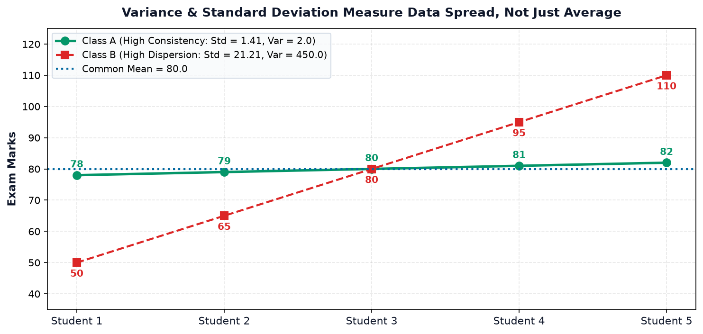
Population Statistics vs Sample Statistics (ddof=0 vs ddof=1)
NumPy mein np.var() aur np.std() by default ddof=0 (Delta Degrees of Freedom = 0) use karte hain, jo ki Population Statistics (N se divide) hai.
Lekin jab tum kisi badi population ka ek chota sample inspect kar rahe ho, toh sample mean sample ke variance ko underestimate karta hai. Is bias ko theek karne ke liye hum Bessel's Correction use karte hain jisme denominator N - 1 hota hai (ddof=1):
import numpy as np class_a = np.array([78, 79, 80, 81, 82]) class_b = np.array([50, 65, 80, 95, 110]) print("--- Class A (Consistent) ---") print("Mean:", np.mean(class_a)) print("Population Variance (ddof=0):", np.var(class_a)) print("Population Std (ddof=0):", np.std(class_a)) print("Sample Std (ddof=1):", np.std(class_a, ddof=1)) print("\n--- Class B (Dispersed) ---") print("Mean:", np.mean(class_b)) print("Population Variance (ddof=0):", np.var(class_b)) print("Population Std (ddof=0):", np.std(class_b)) print("Sample Std (ddof=1):", np.std(class_b, ddof=1))
06. Percentiles & Quantiles — Dividing Data into Slices
Agar tum competitive exams (jaise JEE, CAT, ya GATE) ke results dekho, toh wahan percentage se zyada percentile matter karti hai.
- Percentile ($p \in [0, 100]$): Wo threshold value jisse neeche $p\%$ observations lie karti hain.
- 25th Percentile ($Q_1$ - First Quartile): 25% data isse chota hai.
- 50th Percentile ($Q_2$ - Median): 50% data isse chota hai, 50% bada hai.
- 75th Percentile ($Q_3$ - Third Quartile): 75% data isse chota hai.
- Quantile ($q \in [0.0, 1.0]$): Same concept, bas scale 0 se 1 ke beech hoti hai (e.g. 0.25 quantile = 25th percentile).
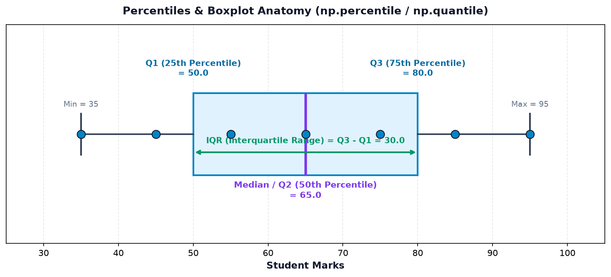
Example 1: Student Marks Percentiles
import numpy as np marks = np.array([35, 45, 55, 65, 75, 85, 95]) print("25th percentile (Q1):", np.percentile(marks, 25)) print("50th percentile (Median):", np.percentile(marks, 50)) print("75th percentile (Q3):", np.percentile(marks, 75))
Example 2: Sales Quantiles
import numpy as np sales = np.array([100, 120, 130, 150, 180, 220, 250]) print("25% quantile:", np.quantile(sales, 0.25)) print("50% quantile:", np.quantile(sales, 0.50)) print("75% quantile:", np.quantile(sales, 0.75))
marks array mein 50.0 ya 80.0 kahi bhi present nahi tha! NumPy by default method='linear' interpolation use karta hai pass-pass ke elements ke beech estimate nikalne ke liye. Isliye kabhi ye assume mat karna ki percentile value hamesha original dataset ka hi koi number hogi.
07. Cumulative Operations — Tracking Running Totals
Standard aggregation functions (jaise np.sum) poore array ko condense karke ek single final scalar bana dete hain. Lekin business dashboards aur financial tracking mein hume aksar ye dekhna hota hai ki day-by-day progress kaise ho rahi hai.
np.cumsum(a): Cumulative Sum — Har point par previous saare elements ka running sum calculate karta hai. Output ki shape original array ke barabar hoti hai.np.cumprod(a): Cumulative Product — Har point par running product calculate karta hai (useful for compound interest, growth multipliers, and probability chains).
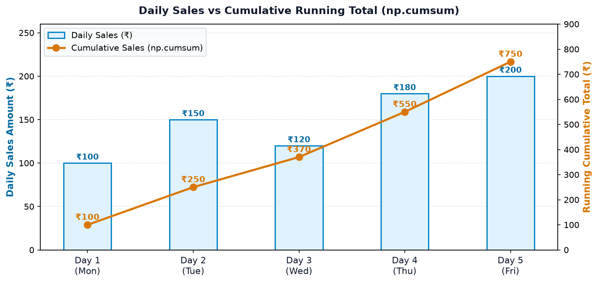
Example 1: Weekly Retail Sales Running Total
import numpy as np daily_sales = np.array([100, 150, 120, 180, 200]) total_rev = np.sum(daily_sales) running_total = np.cumsum(daily_sales) print("Total sales:", total_rev) print("Cumulative sales:", running_total)
Example 2: Investment Growth Multipliers
Ek portfolio 3 successive quarters mein grow karta hai (10% growth = 1.10x, 20% growth = 1.20x, 5% growth = 1.05x):
import numpy as np multipliers = np.array([1.10, 1.20, 1.05]) running_growth = np.cumprod(multipliers) print("Quarterly Multipliers:", multipliers) print("Compounded Growth Factor:", np.round(running_growth, 4))
np.sum(arr) hamesha 1 number deta hai. np.cumsum(arr) hamesha original length ka array return karta hai jiska aakhiri element np.sum(arr) ke barabar hota hai!
08. Mastering 2D Array Reductions — Axis 0 vs Axis 1
NumPy beginners ke liye sabse confusing concept hota hai: "axis=0 ka matlab column hota hai ya row?"
Is confusion ko permanently khatam karne ka golden rule ye hai:
axis=0specified → Rows collapse (up-to-down add honge) → Output mein 1 value per column bachegi.axis=1specified → Columns collapse (left-to-right add honge) → Output mein 1 value per row bachegi.
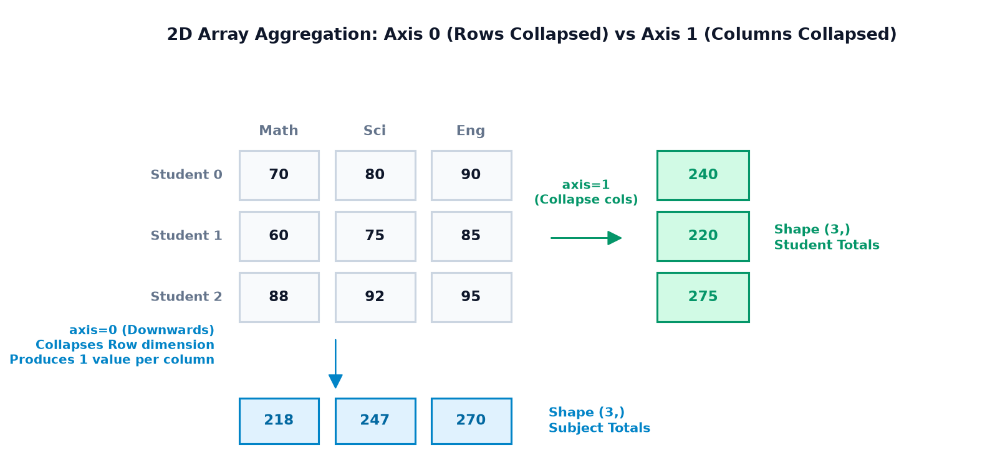
Example 1: 3x3 Student Marks Matrix
3 students (rows) aur 3 subjects (columns: Math, Science, English):
import numpy as np marks = np.array([ [70, 80, 90], # Student 0 [60, 75, 85], # Student 1 [88, 92, 95] # Student 2 ]) # axis=0: Collapse rows (Vertical sum -> Subject totals) sub_totals = np.sum(marks, axis=0) sub_means = np.mean(marks, axis=0) # axis=1: Collapse cols (Horizontal sum -> Student totals) stu_totals = np.sum(marks, axis=1) stu_means = np.mean(marks, axis=1) print("Subject Totals (axis=0):", sub_totals) print("Subject Averages (axis=0):", np.round(sub_means, 2)) print("Student Totals (axis=1):", stu_totals) print("Student Averages (axis=1):", np.round(stu_means, 2))
Example 2: Shop Department Sales Across 4 Days
4 days (rows: Day 1 to 4) aur 3 departments (columns: Grocery, Apparel, Electronics):
import numpy as np dept_sales = np.array([ [1500, 2000, 1800], # Day 1 [1200, 1900, 1700], # Day 2 [1800, 2200, 2100], # Day 3 [1600, 2100, 1900] # Day 4 ]) # shape (4, 3) total_per_dept = np.sum(dept_sales, axis=0) # Collapse days (shape (3,)) total_per_day = np.sum(dept_sales, axis=1) # Collapse depts (shape (4,)) print("Department Total Revenue:", total_per_dept) print("Daily Total Store Revenue:", total_per_day)
09. Dimensional Integrity with keepdims=True
By default, jab NumPy kisi axis par aggregation perform karta hai, toh wo us axis ko completely drop kar deta hai. For example, ek (2, 3) matrix ka axis=1 mean lene par output shape (2,) (1D array) ban jaati hai.
Lekin agar hume Broadcasting (Topic 8) ke through original matrix se uske row-averages subtract karne ho, toh (2, 3) aur (2,) directly subtract hone mein alignment error ya column-wise broadcast trigger kar sakte hain!
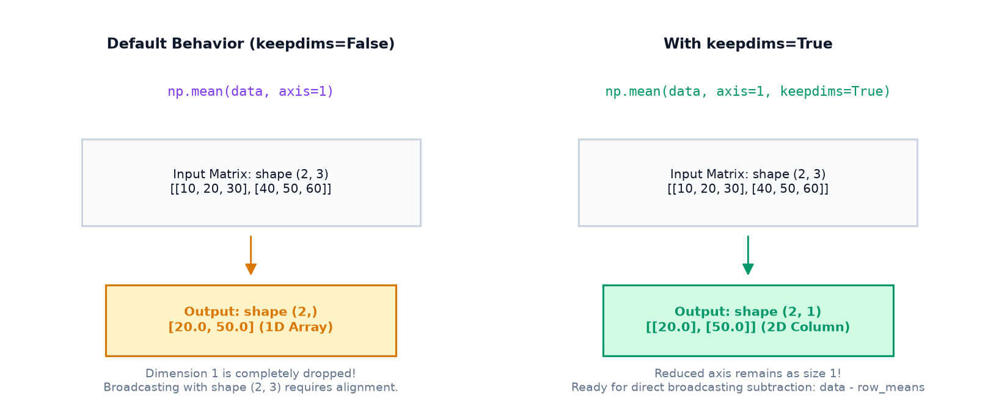
Example 1: Row-Wise Mean Centering (Deviation from Mean)
import numpy as np data = np.array([ [10, 20, 30], [40, 50, 60] ]) # shape (2, 3) # Without keepdims: shape becomes (2,) mean_default = np.mean(data, axis=1) # With keepdims=True: shape remains (2, 1) mean_kd = np.mean(data, axis=1, keepdims=True) print("Default Mean Shape:", mean_default.shape) print("keepdims Mean Shape:", mean_kd.shape) print("keepdims Mean values:\n", mean_kd) # Direct broadcasting subtraction: (2, 3) - (2, 1) -> (2, 3) deviations = data - mean_kd print("\nDeviations from row mean:\n", deviations)
Example 2: Feature Standardization Across Columns
import numpy as np scores = np.array([ [70, 85], [80, 90], [90, 95] ]) # 3 students x 2 tests col_means = np.mean(scores, axis=0, keepdims=True) # shape (1, 2) centered_scores = scores - col_means print("Original Scores:\n", scores) print("Column Means (1, 2):\n", col_means) print("Centered Scores:\n", centered_scores)
10. Handling Missing Data & NaN-Aware Statistics
Real-world data collection mein sensors disconnect ho sakte hain, survey form mein user blank chhod sakta hai, ya network packet drop ho sakta hai. In missing ya unrecorded values ko NumPy np.nan (Not a Number, IEEE 754 float representation) se denote karta hai.
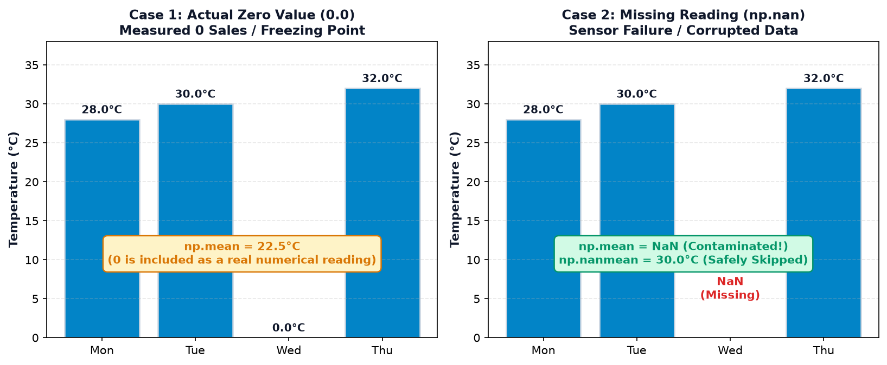
NaN Contamination Problem
Agar tum regular np.mean() ya np.sum() kisi aise array par call karoge jisme ek bhi np.nan hai, toh standard floating-point rules ke tehat poora output nan ban jayega!
Is problem ko solve karne ke liye NumPy ke paas dedicated NaN-Aware statistical functions hain jo NaNs ko automatically filter karke baaki valid numbers par calculations karte hain:
| Regular Function (Fails on NaN) | NaN-Aware Function (Safe) | Behavior |
|---|---|---|
np.sum(a) |
np.nansum(a) |
NaNs ko skip karke valid numbers add karta hai |
np.mean(a) |
np.nanmean(a) |
Sirf non-NaN count se divide karke average nikalta hai |
np.median(a) |
np.nanmedian(a) |
NaNs ko discard karke true middle value nikalta hai |
np.std(a) |
np.nanstd(a) |
Valid values ka standard deviation nikalta hai |
np.min(a) / np.max(a) |
np.nanmin(a) / np.nanmax(a) |
Minimum aur Maximum valid number find karta hai |
Example 1: Weather Station Temperature Sensor Reading
import numpy as np # Wednesday ko sensor disconnect ho gaya (np.nan) temps = np.array([28.0, 30.0, np.nan, 32.0]) print("Missing Mask (np.isnan):", np.isnan(temps)) print("Regular mean (Contaminated):", np.mean(temps)) print("NaN-aware mean (np.nanmean):", np.nanmean(temps)) print("NaN-aware sum (np.nansum):", np.nansum(temps)) print("NaN-aware min (np.nanmin):", np.nanmin(temps)) print("NaN-aware max (np.nanmax):", np.nanmax(temps))
Edge Case: What Happens When the ENTIRE Array is NaN?
Ye ek bohot subtle interview question aur production bug source hai:
import numpy as np all_missing = np.array([np.nan, np.nan]) # nansum of empty slice returns 0.0 print("nansum on all-NaN:", np.nansum(all_missing)) # nanmean on all-NaN emits RuntimeWarning and returns nan print("nanmean on all-NaN:", np.nanmean(all_missing))
np.nansum([nan, nan]) ka 0.0 return karne ka matlab ye bilkul nahi hai ki dukan par 0 rupees ki sale hui thi! Iska matlab hai ki calculate karne ke liye koi valid data points hi available nahi the. Production code mein hamesha pehle check karein: np.isnan(arr).all().
11. Outliers & Robust Summaries (The IQR Method)
Outlier ek aisi observation hoti hai jo dataset ke baaki typical pattern se abnormally door ya alag hoti hai.
- Mean aur Standard Deviation Non-Robust hote hain: Ek akela extreme number in dono ko drastically distort kar deta hai.
- Median aur IQR Robust hote hain: Ye extreme boundary values se affect nahi hote aur true majority structure ko preserve karte hain.
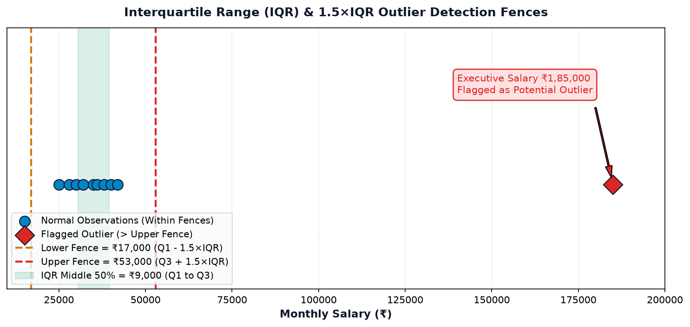
Mathematical Formulation of IQR Fences
- Calculate Quartiles: $Q_1$ (25th percentile) aur $Q_3$ (75th percentile).
- Interquartile Range: $IQR = Q_3 - Q_1$.
- Lower Fence: $Q_1 - 1.5 \times IQR$.
- Upper Fence: $Q_3 + 1.5 \times IQR$.
Jo points lower fence se chote ya upper fence se bade hote hain, unhe potential outliers ke roop mein inspect kiya jata hai.
Example: Employee Salary Outlier Flagging
import numpy as np salaries = np.array([25000, 28000, 30000, 32000, 35000, 36000, 38000, 40000, 42000, 185000]) q1 = np.percentile(salaries, 25) q3 = np.percentile(salaries, 75) iqr = q3 - q1 lower_fence = q1 - 1.5 * iqr upper_fence = q3 + 1.5 * iqr outliers = salaries[(salaries < lower_fence) | (salaries > upper_fence)] normal_salaries = salaries[(salaries >= lower_fence) & (salaries <= upper_fence)] print(f"Q1 (25%): ₹{q1:,.0f}") print(f"Q3 (75%): ₹{q3:,.0f}") print(f"IQR (Middle 50% spread): ₹{iqr:,.0f}") print(f"Lower Boundary: ₹{lower_fence:,.0f}") print(f"Upper Boundary: ₹{upper_fence:,.0f}") print("Identified Outliers:", outliers) print("Normal Salaries Count:", len(normal_salaries))
12. Real-World Applications & Case Studies
NumPy ki aggregation aur statistical operations sirf theoretical mathematical exercises nahi hain. Ye real-world data science, finance, engineering, aur sports analytics ka backbone hain. Aao 5 detailed practical applications dekhte hain:
Application 1: Student Performance Analytics Dashboard
Ek coaching institute mein 5 students (Aarav, Bhavya, Chirag, Divya, Esha) ne 3 subjects (Math, Science, English) ke tests diye hain:
import numpy as np students = ["Aarav", "Bhavya", "Chirag", "Divya", "Esha"] subjects = ["Mathematics", "Science", "English"] marks = np.array([ [85, 78, 92], [90, 88, 95], [72, 68, 75], [60, 65, 70], [95, 92, 98] ]) stu_totals = np.sum(marks, axis=1) stu_avgs = np.mean(marks, axis=1) sub_avgs = np.mean(marks, axis=0) sub_stds = np.std(marks, axis=0) top_student_idx = np.argmax(stu_totals) print("--- Student Performance Summary ---") for name, tot, avg in zip(students, stu_totals, stu_avgs): print(f"{name:8s} | Total: {tot} | Avg: {avg:.1f}%") print(f"\nClass Topper: {students[top_student_idx]} with {stu_totals[top_student_idx]} marks!") print("\n--- Subject-Wise Difficulty & Spread ---") for sub, avg, s in zip(subjects, sub_avgs, sub_stds): print(f"{sub:12s} | Class Mean: {avg:.1f}% | Spread (Std): {s:.2f}")
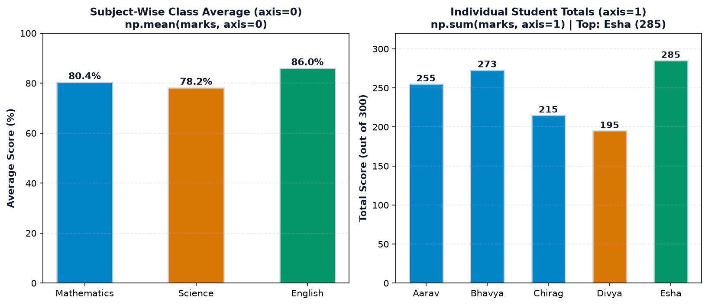
Application 2: Retail Shop Weekly Revenue Dashboard
import numpy as np days = ["Mon", "Tue", "Wed", "Thu", "Fri", "Sat", "Sun"] revenue = np.array([12500, 14200, 11800, 16500, 19800, 24500, 22000]) total = np.sum(revenue) avg_daily = np.mean(revenue) cum_rev = np.cumsum(revenue) best_day = days[np.argmax(revenue)] worst_day = days[np.argmin(revenue)] print(f"Total Weekly Turnover: ₹{total:,.0f}") print(f"Average Daily Revenue: ₹{avg_daily:,.2f}") print(f"Busiest Day: {best_day} (₹{np.max(revenue):,})") print(f"Slowest Day: {worst_day} (₹{np.min(revenue):,})") print("Mid-week Cumulative (Wed end):", f"₹{cum_rev[2]:,}") print("Week-end Cumulative (Sun end):", f"₹{cum_rev[-1]:,}")
Application 3: Sensor Quality Control & Consistency Testing
import numpy as np # Temperature readings in an industrial boiler target = 25.0°C sensor_1 = np.array([25.1, 24.9, 25.0, 25.2, 24.8]) sensor_2 = np.array([21.0, 29.0, 24.5, 28.5, 22.0]) print("Sensor 1 -> Mean:", np.mean(sensor_1), "| Std:", np.round(np.std(sensor_1), 3)) print("Sensor 2 -> Mean:", np.mean(sensor_2), "| Std:", np.round(np.std(sensor_2), 3)) if np.std(sensor_1) < 0.5: print("√ Sensor 1 passed industrial grade quality certification.") if np.std(sensor_2) > 2.0: print("× Sensor 2 rejected due to unacceptable thermal fluctuations!")
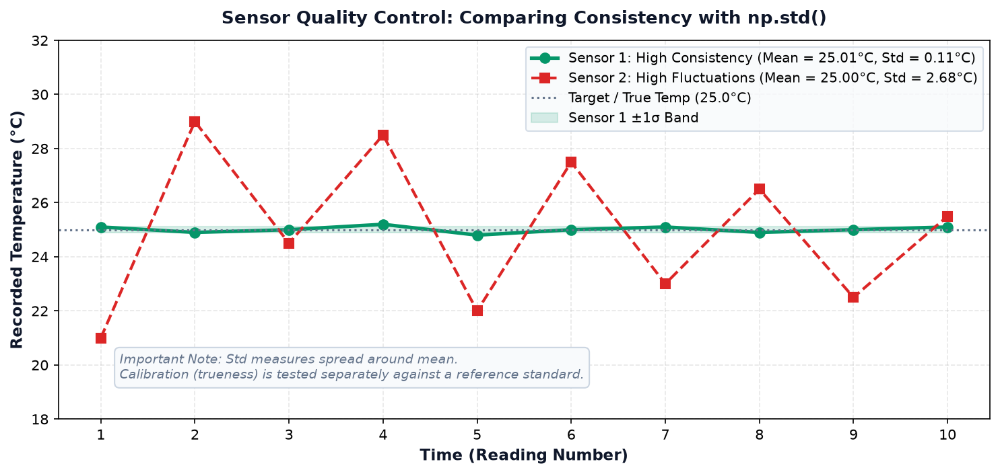
Application 4: Weather Monitoring with Intermittent Sensor Dropouts
import numpy as np # 7 days temperature readings with 2 packet drops (NaN) station_temps = np.array([32.5, 34.0, np.nan, 33.2, 35.1, 31.8, np.nan]) valid_days = np.sum(~np.isnan(station_temps)) clean_mean = np.nanmean(station_temps) clean_std = np.nanstd(station_temps) clean_min = np.nanmin(station_temps) clean_max = np.nanmax(station_temps) print(f"Valid Reading Days: {valid_days}/7") print(f"Weekly Average Temp: {clean_mean:.2f}°C") print(f"Temperature Variation (Std): ±{clean_std:.2f}°C") print(f"Recorded Range: {clean_min}°C to {clean_max}°C")
Application 5: Sports Analytics (Consistency vs Volatility)
import numpy as np batter_a = np.array([45, 52, 48, 50, 55]) batter_b = np.array([0, 110, 10, 95, 35]) print("Batter A (Dependable) -> Avg:", np.mean(batter_a), "| Std:", np.std(batter_a)) print("Batter B (High Volatility) -> Avg:", np.mean(batter_b), "| Std:", np.std(batter_b)) print("Coach Verdict: Crucial run chase mein Batter A select hoga; aggressive powerplay hit ke liye Batter B.")
13. Common Mistakes & Debugging Guide
NumPy aggregation aur statistics mein beginners aksar in 4 deadly traps mein phaste hain. Inhe dhyan se samjho:
Wrong Code:
import numpy as np scores = np.array([45, 92, 18, 77]) bonus = np.argmax(scores) * 0.10 # BUG: Multiplies index 1 instead of 92!
What Happens: argmax returns index 1. Bonus calculate hota hai 0.10 jabki expected tha 9.2!
# Option A: Direct max value max_score = np.max(scores) bonus = max_score * 0.10 # Correct: 9.2 # Option B: Indexing via argmax idx = np.argmax(scores) bonus = scores[idx] * 0.10 # Correct: 9.2
Wrong Code:
# Trying to get each student's total marks (across columns) stu_totals = np.sum(marks_matrix, axis=0) # WRONG! Gives subject totals instead!
Why it happens: Developer sochta hai "Students rows mein hain toh axis 0 hona chahiye". Lekin rule hai: jis axis par operate karoge wo collapse hogi! Agar students bachaane hain toh columns ko collapse karna hoga (axis=1).
stu_totals = np.sum(marks_matrix, axis=1) # Correct: 1 total per student row
Wrong Code:
# Survey sample of 10 people from a city of 1,000,000 sample_std = np.std(survey_data) # Biased: Uses N instead of N-1
Why it happens: NumPy ka default ddof=0 hota hai jo poori population ke liye valid hai. Chote samples mein standard deviation artificially under-reported ho jata hai.
sample_std = np.std(survey_data, ddof=1) # Unbiased sample standard deviation
Wrong Code:
sensor_readings = np.array([10.0, np.nan, 30.0]) avg = np.mean(sensor_readings) # Returns nan! Entire pipeline fails downstream
avg = np.nanmean(sensor_readings) # Correct: 20.0 (Ignores NaN safely)
14. Comprehensive Practice Suite & Self-Assessment
Apni understanding ko test karo! Har question ke neeche Reveal Solution button par click karke answer aur explanation check karein.
Part A: 10 Output Prediction Questions
Prediction 01 arr = np.array([4, 2, 8, 1, 6]) • What is np.argmin(arr)?
Predicted Output: 3
Explanation: Array ki minimum value 1 hai, jo zero-based index 3 par baithi hai.
Prediction 02 arr = np.array([[1, 2], [3, 4]]) • What is np.prod(arr, axis=0)?
Predicted Output: [3, 8]
Explanation: axis=0 rows ko collapse karta hai: Column 0 ka product = $1 \times 3 = 3$, Column 1 ka product = $2 \times 4 = 8$.
Prediction 03 arr = np.array([10, 20, 30, 40]) • What is np.cumsum(arr)?
Predicted Output: [10, 30, 60, 100]
Explanation: Running sum: 10, 10+20=30, 30+30=60, 60+40=100.
Prediction 04 arr = np.array([5, 5, 5, 5]) • What is np.std(arr)?
Predicted Output: 0.0
Explanation: Jab saari values exact identical hoti hain, toh mean se koi deviation nahi hota (σ = 0.0).
Prediction 05 arr = np.array([10, 20, np.nan, 40]) • What is np.nanmin(arr)?
Predicted Output: 10.0
Explanation: np.nanmin NaN ko skip karke baaki valid numbers (10, 20, 40) ka minimum 10.0 return karta hai.
Prediction 06 arr = np.array([[5, 10, 15], [20, 25, 30]]) • Shape of np.mean(arr, axis=1, keepdims=True)?
Predicted Output: (2, 1)
Explanation: keepdims=True hone ki wajah se reduced axis 1 size 1 ke roop mein barkarar rehti hai.
Prediction 07 arr = np.array([1, 0, 3, 0, 0, 7]) • What is np.count_nonzero(arr)?
Predicted Output: 3
Explanation: Non-zero elements hain: 1, 3, aur 7 (total 3 numbers).
Prediction 08 arr = np.array([10, 30, 20, 40, 50]) • What is np.median(arr)?
Predicted Output: 30.0
Explanation: Sort karne par array banta hai [10, 20, 30, 40, 50]. Exact middle element index 2 par 30 hai.
Prediction 09 arr = np.array([100, 200, 300]) • What is np.var(arr, ddof=1)?
Predicted Output: 10000.0
Explanation: Mean = 200. Deviations squared = $(-100)^2 + 0^2 + 100^2 = 20,000$. Sample variance divides by $N-1 = 2$, so $20,000 / 2 = 10,000.0$.
Prediction 10 arr = np.array([np.nan, np.nan]) • What is np.nansum(arr)?
Predicted Output: 0.0
Explanation: NumPy standard specification ke mutabiq empty valid slice ka sum 0.0 define kiya gaya hai.
Part B: 8 Coding Exercises
Exercise 01 Z-Score Normalization (Standardization)
Task: Kisi bhi 1D array ko zero mean aur unit variance mein transform karo.
import numpy as np raw = np.array([50, 60, 70, 80, 90]) z = (raw - np.mean(raw)) / np.std(raw) print("Z-scores:", np.round(z, 2)) print("New Mean:", np.round(np.mean(z), 2), "| New Std:", np.std(z))
Exercise 02 Subject-Wise Topper Index Finder
Task: 3 students x 3 subjects matrix mein har subject ka topper student index nikalo.
import numpy as np exam = np.array([[75, 88, 92], [82, 95, 78], [91, 84, 89]]) toppers = np.argmax(exam, axis=0) print("Subject Toppers (Student Indices):", toppers)
Exercise 03 Cumulative Percentage of Sales
Task: Daily sales ka cumulative percentage nikalo (running total / total * 100).
import numpy as np sales = np.array([200, 300, 500]) cum_pct = (np.cumsum(sales) / np.sum(sales)) * 100 print("Cumulative %:", cum_pct)
Exercise 04 Trimmed Mean (10% Trim)
Task: Bottom 10% aur Top 10% outliers ko discard karke mean calculate karo.
import numpy as np data = np.array([10, 25, 28, 30, 32, 35, 38, 40, 42, 100]) p10 = np.percentile(data, 10) p90 = np.percentile(data, 90) trimmed = data[(data >= p10) & (data <= p90)] print("Trimmed Mean:", np.mean(trimmed))
Exercise 05 Clean Sensor Data — NaN Imputation with Median
Task: Sensor array ke missing values (NaN) ko valid data ke median se replace karo.
import numpy as np raw = np.array([24.5, 25.0, np.nan, 24.8, np.nan, 25.2]) med = np.nanmedian(raw) imputed = np.where(np.isnan(raw), med, raw) print("Cleaned Array:", imputed)
Exercise 06 IQR Outlier Filtering Function
Task: Ek reusable function likho jo array ke outliers filter karke return kare.
import numpy as np def find_outliers(arr): q25, q75 = np.percentile(arr, [25, 75]) iqr = q75 - q25 return arr[(arr < q25 - 1.5*iqr) | (arr > q75 + 1.5*iqr)] print("Outliers:", find_outliers(np.array([10, 12, 11, 13, 12, 100])))
Exercise 07 Row-Wise Difference from Minimum
Task: Har row ke elements se usi row ka minimum element subtract karo using keepdims.
import numpy as np mat = np.array([[10, 15, 20], [30, 25, 40]]) diff = mat - np.min(mat, axis=1, keepdims=True) print("Diff from row min:\n", diff)
Exercise 08 Weighted Average Calculation
Task: Final exam (50% weight), Midterm (30% weight), aur Quiz (20% weight) ka weighted average nikalo.
import numpy as np scores = np.array([80, 90, 70]) # Quiz, Midterm, Final weights = np.array([0.2, 0.3, 0.5]) # Weights w_avg = np.sum(scores * weights) / np.sum(weights) print("Weighted Average:", w_avg)
Part C: 8 Multiple Choice Questions
MCQ 01 Agar dataset mein ek bohot bada extreme number (outlier) add ho jaye, toh sabse zyada kaunsi measure distort hogi?
A) Median
B) Mean
C) Mode
D) Count
Correct Answer: B) Mean
Explanation: Mean har observation ka arithmetic sum use karta hai, isliye extreme outlier usse strongly apni taraf pull kar leta hai.
MCQ 02 2D array mein axis=1 specify karne par kaunsa dimension reduce hota hai?
A) Rows
B) Columns
C) Both Rows and Columns
D) None
Correct Answer: B) Columns
Explanation: Axis 1 horizontal direction (columns) hoti hai. Ispe aggregation karne se saare columns collapse hokar 1 value per row banti hai.
MCQ 03 np.std() mein Sample Standard Deviation calculate karne ke liye kaunsa parameter pass karna hota hai?
A) sample=True
B) ddof=0
C) ddof=1
D) unbiased=True
Correct Answer: C) ddof=1
Explanation: Bessel's correction ke liye Delta Degrees of Freedom (ddof) 1 set kiya jata hai jisse denominator $N-1$ banta hai.
MCQ 04 np.nanmean([10.0, np.nan, 30.0]) ka output kya hoga?
A) 13.33
B) nan
C) 20.0
D) 40.0
Correct Answer: C) 20.0
Explanation: np.nanmean NaN ko discard kar deta hai: $(10 + 30) / 2 = 20.0$.
MCQ 05 50th Percentile kiske barabar hoti hai?
A) Mean
B) Standard Deviation
C) Median
D) Mode
Correct Answer: C) Median
Explanation: 50th percentile exact middle cutoff point hota hai, jo ki distribution ka Median hai.
MCQ 06 np.cumsum([2, 4, 6]) ka output kya hoga?
A) 12
B) [2, 6, 12]
C) [12, 10, 6]
D) [2, 8, 48]
Correct Answer: B) [2, 6, 12]
Explanation: Running sum: 2, 2+4=6, 6+6=12.
MCQ 07 Shape (4, 5) array par np.sum(arr, axis=1, keepdims=True) karne par output shape kya hogi?
A) (4,)
B) (5,)
C) (4, 1)
D) (1, 5)
Correct Answer: C) (4, 1)
Explanation: Axis 1 collapse hokar dimension 1 ban jati hai (4, 1).
MCQ 08 Standard IQR Outlier rule ke mutabiq Upper Fence boundary kya hoti hai?
A) Q3 + IQR
B) Q3 + 1.5 × IQR
C) Q1 + 1.5 × IQR
D) Mean + 3 × Std
Correct Answer: B) Q3 + 1.5 × IQR
Explanation: John Tukey's exploratory data analysis rule defines upper fence as $Q_3 + 1.5 \times IQR$.
15. Capstone Mini-Project: Student Performance & Retail Analytics
Is project mein hum NumPy aur Matplotlib ka use karke do complete real-world analytical modules execute karenge:
- Module A — Academic Performance Engine: 6 students ke 4 subjects ke marks analyze karna, row/col statistics, class topper, and consistency standard deviation.
- Module B — Retail Store Revenue & Inventory Engine: 14 days ki daily turnover, running totals (cumsum), percentiles, aur missing-data NaN handling.
import numpy as np print("==================================================") print(" CODEVERSE STUDENT & RETAIL ANALYTICS ENGINE ") print("==================================================") # ------------------------------------------------------------------------- # MODULE 1: STUDENT PERFORMANCE ANALYTICS # 6 Students x 4 Subjects: [Math, Science, English, History] # ------------------------------------------------------------------------- students = ["Aarav", "Bhavya", "Chirag", "Divya", "Esha", "Farhan"] subjects = ["Math", "Science", "English", "History"] marks = np.array([ [75, 82, 88, 91], # Aarav [88, 79, 94, 85], # Bhavya [62, 70, 65, 58], # Chirag [95, 92, 98, 96], # Divya (Topper) [80, 85, 78, 84], # Esha [50, 55, 60, 48] # Farhan ]) stu_totals = np.sum(marks, axis=1) stu_means = np.mean(marks, axis=1) sub_means = np.mean(marks, axis=0) sub_stds = np.std(marks, axis=0) topper_idx = np.argmax(stu_totals) print("\n>>> 1. Individual Student Report Cards:") for name, tot, avg in zip(students, stu_totals, stu_means): print(f" {name:8s} | Grand Total: {tot}/400 | Percentage: {avg:.2f}%") print(f"\n Academic Gold Medalist: {students[topper_idx]} ({stu_totals[topper_idx]} marks)!") print("\n>>> 2. Subject Breakdown & Dispersion:") for sub, avg, s in zip(subjects, sub_means, sub_stds): print(f" {sub:8s} | Class Mean: {avg:.1f}% | Consistency (Std): ±{s:.2f}") # ------------------------------------------------------------------------- # MODULE 2: RETAIL SALES & INVENTORY METRICS # 14 Days Fortnight Sales Figures (in INR) # ------------------------------------------------------------------------- daily_sales = np.array([12500, 14200, 11800, 16500, 19800, 24500, 22000, 13000, 14800, 12200, 17100, 20500, 25800, 23500]) s_total = np.sum(daily_sales) s_mean = np.mean(daily_sales) s_median = np.median(daily_sales) s_std = np.std(daily_sales) s_cumsum = np.cumsum(daily_sales) q25 = np.percentile(daily_sales, 25) q75 = np.percentile(daily_sales, 75) print("\n>>> 3. Retail Fortnight Revenue Analytics:") print(f" Total 14-Day Turnover : ₹{s_total:,.0f}") print(f" Daily Mean Sales : ₹{s_mean:,.2f}") print(f" Median Daily Sales : ₹{s_median:,.2f}") print(f" Daily Sales Spread (Std): ₹{s_std:,.2f}") print(f" Lower Quartile (Q1) : ₹{q25:,.0f}") print(f" Upper Quartile (Q3) : ₹{q75:,.0f}") # Missing values handling in warehouse stocks warehouse_stock = np.array([120, 145, np.nan, 180, 210, np.nan, 195]) clean_stock_sum = np.nansum(warehouse_stock) clean_stock_avg = np.nanmean(warehouse_stock) print("\n>>> 4. Warehouse Stock (NaN-Handled):") print(f" Valid Stock Sum : {clean_stock_sum:.0f} units") print(f" Valid Stock Mean: {clean_stock_avg:.1f} units") print("==================================================")
16. Quick Reference Cheat Sheet & Function Map
NumPy ke saare aggregation aur statistical functions ka concise quick reference:
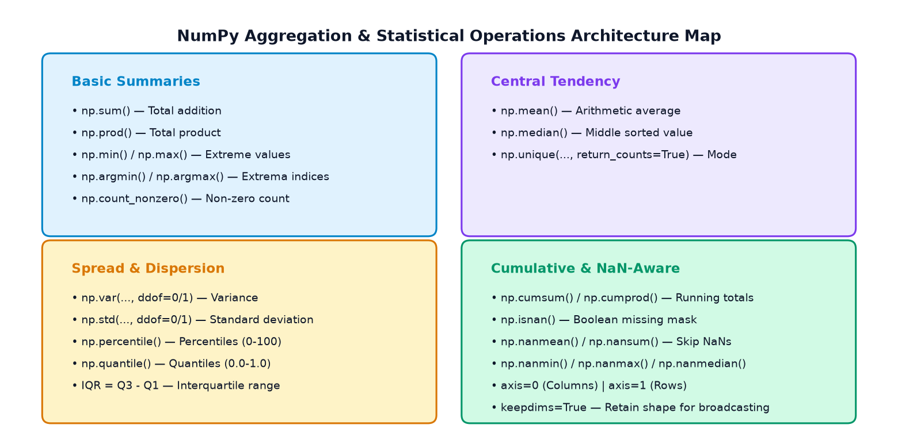
| Function | Primary Purpose | Key Parameters | Sample Call |
|---|---|---|---|
np.sum |
Array elements ka grand sum | axis, keepdims |
np.sum(arr, axis=0) |
np.prod |
Elements ka continuous product | axis, keepdims |
np.prod(arr) |
np.min / np.max |
Minimum ya maximum actual value | axis, keepdims |
np.max(arr) |
np.argmin / np.argmax |
Extrema ki zero-based index position | axis, keepdims |
np.argmax(arr) |
np.mean |
Arithmetic average (μ) | axis, keepdims |
np.mean(arr) |
np.median |
Middle value after sorting (robust) | axis, keepdims |
np.median(arr) |
np.var |
Variance (σ² spread) | ddof=0 (pop), ddof=1 (sample) |
np.var(arr, ddof=1) |
np.std |
Standard deviation (σ) | ddof=0 (pop), ddof=1 (sample) |
np.std(arr, ddof=1) |
np.percentile |
p-th percentile (0 to 100) | q, method='linear' |
np.percentile(arr, 75) |
np.quantile |
q-th quantile (0.0 to 1.0) | q, method='linear' |
np.quantile(arr, 0.75) |
np.cumsum |
Running cumulative sum | axis |
np.cumsum(arr) |
np.nanmean / np.nansum |
NaN values ko skip karke calculations | axis, keepdims |
np.nanmean(arr) |